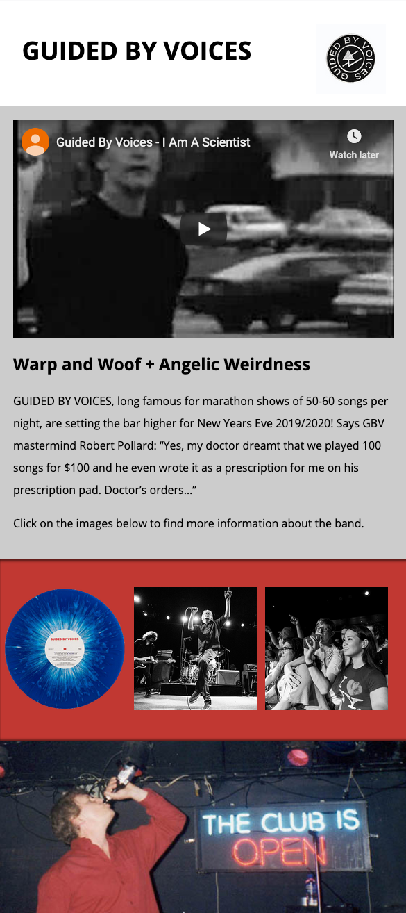

Think for a moment about your favorite band. Or maybe about your favorite movie of all time. What sort of information needs to be on their website? In this assignment, you will create a simple website that shares some information with users about the band/website and provides ways to engage users with a band/movie they love.
To get this assignment started, you should click this link to download the starter root folder from Google Docs.
Once you have the root folder downloaded you can open it up in Atom to begin.
When you open up the file 'index.html', pay special attention to the comments throughout the code. Those will be the instructions you will need to follow to complete the assignment.
In this assignment I've given you a mostly-finished web page, structured to allow you to build a website for your favorite band or movie. Unfortunately, no images or video have been added yet — this is your job! You need to add some media to make the page look nice and make more sense. You will also be required to create two new html pages within the root folder. These pages will be linked to from your home page and will require you to put additional coding skills to use.
Additionally, you will need to find one video on youtube that you will embed in your site. You'll also need to find or create several images. These images will need to be prepared for use on the site following the instructions below.
After you've read the comments in the html you downloaded, you will need to find images to use on your site. The comments will guide you on what sorts of images you'll need to find.
Using Photoshop, create 400px wide and 120px wide versions of the images you selected for use on your site.
It would be useful to name the files like this:
The final image on your site (see HTML line 51) will require a 1,200 pixel wide image. You will also need to save a version that is cropped to show a detail of the image and sized to be 400 pixels wide.
If you follow the directions carefully, you should end up with a website that looks something like this:

The instructions include linking to the provided CSS stylesheet within your HTML page. If you do so correctly, your site should be similar to this one. If you're feeling adventurous you could tweak some styles to make the design your own.
You should save this project to GitHub. Once you've 'pushed' all of your changes to GitHub, click the assignment name above (Building a Simple Website for Your Favorite ...) to submit for grading. You'll need to paste a link to the GitHub repository into the Text Submission area of that page.
You don't need to know any CSS to do this assessment; you just need to link to the provided CSS inside the HTML <head> element.